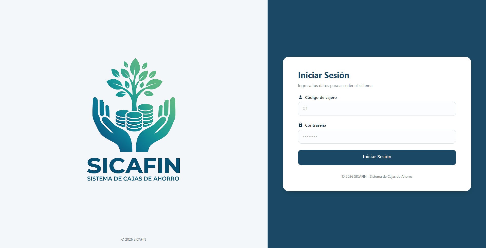

Controla información de socios, certificados, aportaciones y movimientos.
SICAFIN · Offline-first
Gestión financiero-contable para cajas de ahorro rurales.
Una plataforma de escritorio multiplataforma para administrar socios, aportes, ahorros, préstamos, contabilidad y reportes sin depender de una conexión permanente a internet.
Sin internet permanente
Datos protegidos
Reportes claros

Consulta saldos, cuotas, amortización, garantes y cartera.
Integra registros financieros con reportes claros para la caja.
Incluye
Módulos principales.
Una base funcional para la operación diaria de la caja, con espacio para crecer y sumar automatización.
Socios y certificados
Ahorros y aportes
Préstamos y pagos
Contabilidad básica
Reportes financieros
Respaldos de información
Módulo de IA
Beneficios clave
Una herramienta práctica para trabajar con más orden.
SICAFIN se enfoca en la operación real de cajas rurales: simplicidad, control financiero, seguridad y funcionamiento sin depender del internet.
↯
Funciona sin internet
Permite registrar y consultar información aunque la conectividad sea limitada.
◇
Diseñado para cajas rurales
No es un sistema pesado para cooperativas grandes; se adapta al trabajo diario de una caja de ahorro.
▣
Contabilidad integrada
Relaciona operaciones financieras con registros contables para reducir errores manuales.
◷
Reportes claros
Genera información útil para directivos, tesoreros y responsables administrativos.
✓
Seguridad y respaldo
Organiza la información localmente con mecanismos de protección y copias de respaldo.
Problema que resolvemos
Adiós a hojas de cálculo y registros manuales dispersos.
Muchas cajas de ahorro gestionan préstamos, aportes, ahorros y reportes con herramientas separadas. Eso consume tiempo, genera duplicidad y aumenta el riesgo de errores. SICAFIN unifica el flujo operativo en una experiencia clara.
Conocer la historia del proyecto1
Registrar
Socios, cuentas, aportes y operaciones.
2
Controlar
Préstamos, pagos, caja y movimientos.
3
Reportar
Información financiera y contable clara.
Planes
Precio simple y accesible.
Modelo mensual pensado para la realidad económica de cajas de ahorro rurales, sin contrato anual obligatorio.
Prueba gratuita
Plan piloto gratuito
$0 durante 30 días
- Acceso a módulos principales
- Demostración del sistema
- Revisión inicial de necesidades
- Acompañamiento básico
Plan principal
Plan SICAFIN Institucional
$35 mensuales por caja
- Socios, ahorros y préstamos
- Módulo contable y reportes
- Respaldo de información
- Soporte por WhatsApp, correo o videollamada
Servicio único
Implementación inicial
$50 pago único
- Instalación y configuración inicial
- Migración básica de datos
- Capacitación inicial
- Revisión del flujo de trabajo
Próximo paso
¿Tu caja de ahorro todavía trabaja con hojas de cálculo?
Agenda una demostración y revisa cómo SICAFIN puede ordenar la operación financiera de tu organización.